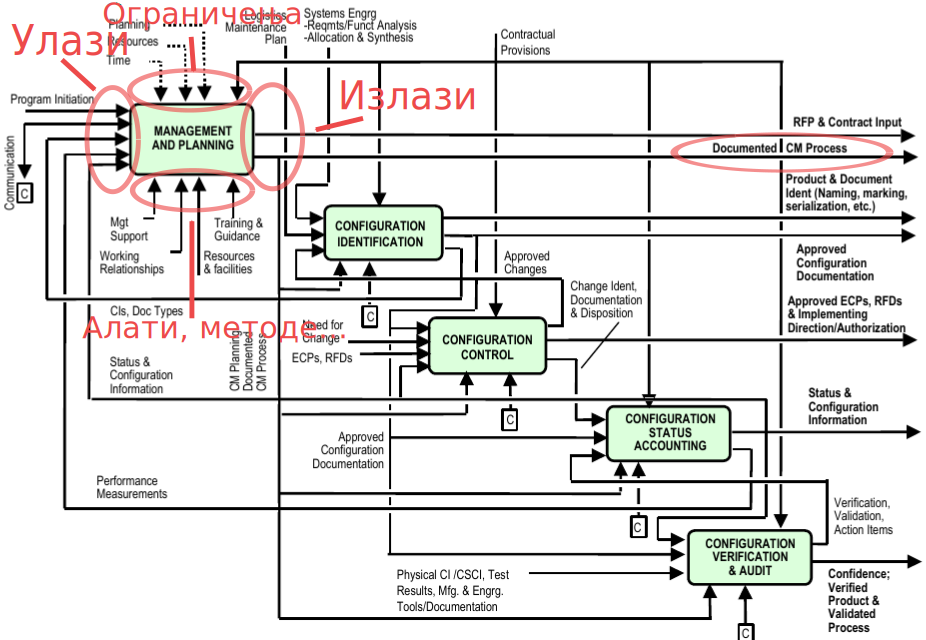
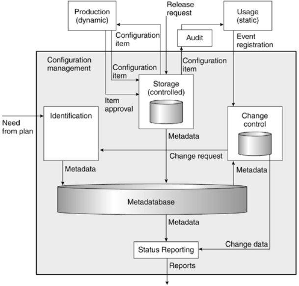
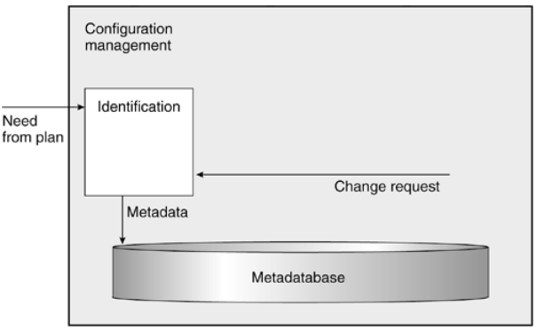
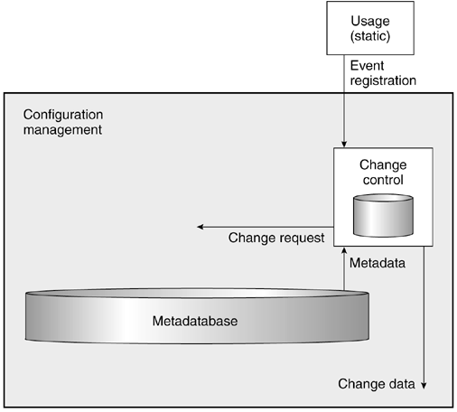

Управљање конфигурацијом софтвера
Основе управљања конфигурацијом софтвера
Проф. др Игор Дејановић (igord at uns ac rs)
Креирано 2022-10-27 Thu 17:15, притисни ESC за мапу, "м" за мени, Ctrl+Shift+F за претрагу
Садржај
1. Дефиниција
1.1. Управљање конфигурацијом
Процес за успоставу и одржавање конзистенције функционалних и физичких особина као и перформанси производа у складу са захтевима, дизајном и оперативним информацијама током његовог животног циклуса*.
1.2. Управљање конфигурацијом
Дисциплина која се бави идентификацијом свих компоненти и њихових међусобиних веза, у систему који континуално еволуира, у циљу очувања интегритета, следљивости и контроле промена у току животног циклуса система*.
1.3. Управљање конфигурацијом
Управљање конфигурацијом представља јединствену идентификацију, контролисано складиштење, контролисану измену и извештавање о статусу изабраних производа, њихових радних везија и компоненти за време животног циклуса система*.
Управљање конфигурацијом софтвера представља контролу еволуције сложених софтверских система*.
2. Мотивација
2.1. Управљање конфигурацијом софтвера
- Организациони оквир за управљање развојем софтверских система кроз све фазе животног циклуса
- Омогућава управљање пројектом на структуриран, уређен и продуктиван начин.
2.2. Зашто користити УКС?
Успешност технолошких пројеката:
| Методологија | Агилна | Waterfall |
|---|---|---|
| Успешних | 42% | 13% |
| Проблематичних | 47% | 59% |
| Пропалих | 11% | 28% |
- Софтверски производи често “живе” годинама па чак и деценијама.
- Софтверски производи су често изузетно комплексни.
- Да би обезбедили континуалну еволуцију морамо увести процесе, технике и алате који ће то омогућити.
- Пракса је показала да је успех пројекта директно повезан са употребом ефикасних техника и алата УКС.
- Прва 4 на листи од 12 корака за бољи развој софтвера1 истакнутог софтвер инжењера, писца и аутора изузетно популарног сервиса StackOverflow Џоула Сполског представљају технике УКС (контрола верзија изворног кода, аутоматизована и континуална изградња и праћење грешака).
3. Управљање конфигурацијом (УК)
3.1. Ставка конфигурације (Configuration Item)
- Према стандарду ANSI/IEEE 1042-1987, ставка конфигурације - СК (Configuration Item или Software Configuration Item) представља основну јединицу идентификације и праћења.
- Било који артифакт над којим се може вршити контрола верзија, који се може пратити.
- На пример, то може бити фајл или директоријум код фајл базираних система, објекти смештени у објектно оријентисаним базама података и сл.
- Готово сви системи за контролу верзија данас у употреби имају фиксну СК - а то је фајл.
- Можемо рећи да је текуће стање пројекта скуп текућих стања свих ставки конфигурације.
- Верзија фајла такође се може посматрати као ставка конфигурације.
3.2. Ставка конфигурације и промене - животни циклус

- Ставка конфигурације настаје из плана.
- Касније верзије настају као производ захтева за променом.
- Захтев за променом настаје на основу искуства у току коришћења.
3.3. Референтна верзија (Baseline)
- Референтна верзија може да значи следеће:
- Идентификација тачних верзија свих СК који чине део једног издања.
- Идентификација тачних верзија СК које су одобрене да постану део следећег издања кроз установљен процес ревизије и одобравања промена.
- Чини основу која је предмет следећих промена.
- У системима за управљање изворним кодом најчешће се спроводи кроз процес "означавања" (енг. Tagging).
3.4. Традиционална дефиниција УК-a
- Идентификација конфигурације (Configuration Identification)
- Управљање променама (Change Control)
- Праћење статуса (Status Accounting)
- Ревизија и верификација (Configuration Verification and Audit)
3.5. Структура процеса УК

3.6. Архитектура система УК

3.7. Идентификација конфигурације (Configuration Identification)
- Обезбеђивање јединствене идентификације за сваки артифакт који је предмет праћења.
- Најчешће су предмети праћења разне врсте фајлова: изворни код, бинарни фајлови, слике, документа, конфигурациони фајлови итд.
- Идентификација често подразумева и именовање директоријума и фајлова на смислен начин који ће поједноставити праћење.
- Артифакти праћења не морају увек бити фајлови у фајл систему већ могу бити елементи у репозиторијумима који нису базирани на фајл систему. На пример, модели у репозиторијумима модела или документи у системима за управљање документима.
3.8. Идентификација у контексту

- Процес идентификације започиње у два случаја: првобитно креирање ставке конфигурације и појава захтева за променом.
- Излаз представљају метаподаци за ставку конфигурације.
- Свака организација прави своју конвенцију јединствене идентификације. Често је ова шема наметнута алатима који се користе за УК.
- Поред идентификације ставке конфигурације потребно је идентификовати и сваки захтев за променом као и сваку нову верзију ставке конфигурације.
3.9. Управљање променама (Change Control)
- Промене су неизбежне: људи праве грешке, клијенти захтевају промене, радно окружење производа еволуира.
- Пуна контрола и управљање захтевима за променама и имплементираним променама на основу захтева.
3.10. Управљање променама у контексту

- Управљање променама је иницирано догађајем.
- Излаз активности управљања променама је документован догађај као и захтеви за променама који су резултат тог догађаја.
3.11. Догађаји
- Управљање променама је иницирано догађајем. Догађај може да се посматра и као жеља за променом али обично није тако формулисан.
- Догађај може представљати и опсервацију да се десило нешто неочекивано или погрешно током употребе ставке конфигурације.
- Догађај може бити, на пример:
- Лоша формулација уочена за време ревизије документа.
- Грешка у кодирању уочена за време проласка кроз програмски код.
- Идеја за проширење или побољшање функционалности настала од стране клијента за време коришћења производа.
- Грешка пронађена за време интеграционог теста.
- Жеља за побољшањем производа када је производ већ испоручен и у фази је активне употребе.
- Упит особљу за помоћ у вези начина употребе производа.
- Прелазак на нову верзију коришћених библиотека и платформи које нису уназад компатибилне са претходним верзијама.
- Догађај се документује у облику регистрације догађаја.
3.12. Захтеви за променама (Change Requests)
- Захтеви за променама настају као последица регистрације догађаја.
- Неки захтеви за променама могу бити планирани (на пример захтеви настали за време ревизије документа), а неки и не (на пример захтев клијента за променом).
- Захтеви за променама даље пролазе кроз активност идентификације јер су предмет праћења.
3.13. Праћење статуса (Status Accounting)
- Ова активност обезбеђује информације потребне за ефикасно управљање развојем и одржавањем производа.
- Друге активностим УК обезбеђују потребне податке у виду метаподатака о ставкама конфигурације као и информације о променама.
- Праћење статуса омогућава екстракцију, уређење и форматирање информација о ставкама конфигурације и променама на захтевани начин.
3.14. Праћење статуса - метрике
- Увођење метрика које могу указати на уска грла у развоју.
- Пример метрика: број дефеката у једном издању, број линија кода у уведеном софтверу, густима дефеката (број дефеката на хиљаду линија кода).
- Намена:
- Мерење напретка пројекта
- Мерење квалитета производа
- Напор уложен за израду производа
- Унапређење односа \(\frac{вредност\ производа}{цена}\).
3.15. Праћење статуса у контексту

- Праћење статуса и извештавање може се обавити у било ком тренутку.
- Излаз ове активности је извештај према задатим критеријумима.
3.16. Ревизија и верификација (Configuration Verification and Audit)
- Осигурава да софтверски производ који се испоручује одговара постављеним захтевима, да је комплетан, да су сви захтеви за променама узети у обзир и да су испоштоване успостављене процедуре УКС.
- Комплетност подразумева и све потребне метаподатке који омогућавају комплетан увид у историју промена које су довеле до верзије која се испоручује.
- Тест извештаји и документација се користе као основа утврђивања задовољења постављених захтева.
- Ова активност се најчешће посматра као део процеса осигурања квалитета.
Ова активност такође се бави дефинисањем:
- Ко и када ће обавити ревизију.
- Обављање ревизије над референтним верзијама.
- Креирање извештаја о обављеним ревизијама.
4. Управљање конфигурацијом софтвера (УКС)
Software Configuration Management (SCM)
4.1. Управљање конфигурацијом софтвера
У контексту развоја софтвера управљање конфигурацијом се може посматрати кроз следеће активности:
- Управљање изворним кодом (Source Code Management)
- Управљање изградњом (Build Engineering)
- Управљање конфигурацијом окружења (Environment Configuration)
- Управљање променама (Change Control)
- Управљање издањима (Release Management)
- Управљање увођењем (Deployment)
4.2. Управљање изворним кодом (Source Code Management)
- Једна од најважнијих УКС дисциплина.
- Бави се:
- Чувањем свих ставки конфигурације које учествују у изградњи производа.
- Праћењем промена над ставкама конифигурације и интеграцијом конкурентних промена.
- Креирањем и праћењем алтернативних токова развоја.
- Враћање и увид у историјске верзије произвољних стакви конфигурације.
- Даје основу за извођење осталих УКС активности.
- У тесној вези је са праћењем дефеката и захтева који су најчешће интегрисани са алатима и процесима управљања изворним кодом.
4.3. Основни принципи управљање изворним кодом
- Сав кôд је у сигурном складишту и не може бити изгубљен.
- Конкурентне промене се једноставно интегришу. Конфликти се једноставно разрешавају.
- За кôд се воде белешке о значајним тренуцима развоја (референтне верзије).
- Управљање варијантама мора бити једноставно употребом грана.
- Кôд промењен у једној варијанти (грани) може се лако пренети на другу варијанту.
- У сваком тренутку имамо потпуну следљивост и можемо добити информације ко је, када и због чега променио изворни кôд? Шта је тачно при томе промењено?
- Можемо у сваком тренутку поништити промену.
4.4. Управљање изградњом софтвера (Build Engineering)
- Активност усмерена на изградњу извршне верзије софвера из изворног кода путем аутоматизованих процедура на сигуран и брз начин.
- Бави се идентификацијом зависности у време компајлирања и извршавања као и других техничких услова потребних за ефикасну изградњу готовог производа.
- Изузетно важна за агилне и итеративне методологије.
4.5. Принципи управљања изградњом софтвера
- Изградња је разумљива и поновљива.
- Изворни кôд и зависности за компајлирање се могу лако одредити.
- Узрок неуспеле изградње се може једноставно установити и проблем се може брзо отклонити.
- Изградња мора бити потпуно аутоматизована.
- Скрипте за аутоматизовању изградњу морају бити читке и морају се једноставно одржавати.
4.6. Управљање конфигурацијом окружења (Environment Configuration)
- Идентификација и управљање зависностима производа у време извршавања (runtime dependencies).
- Развојно окружење је често другачије од продукционог или QA (Quality Assurance).
- Аутоматизација управљања параметрима окружења (нпр. промењиве окружења, конекција са базом, повезивање са веб сервисима).
- Значајно за активност увођења (deployment).
- Уколико се одради лоше може довести до несагледивих последица.
4.7. Управљање променама (Change Control)
- Поред управљања изворним кодом један од најзначајнијих активности у УКС.
- Контролисана измена продукционог окружења (или QA окружења).
- Такође есенцијална активност за одређивање које издање производа ће постати део продукционог окружења.
- У великим фирмама често реализована кроз одбор за управљање променама (Change Control Board - CCB).
- Процес који прописује начин разрешавања захтева за променама (Request for Change).
4.8. Принципи управљање променама
- Промене морају бити планиране.
- Промене морају бити разумљиве укључујући и утицај који ће имати на продукционо окружење.
- Начин одобравања и ауторизација промена мора бити успостављена.
- Процедуре за хитне измене морају бити прописане у случајевима инцидентних ситуација.
- Мора постојати јасна следљивост за све извршене промене - Ко је промену тражио? Ко је одобрио? Када је промена извршена над продукционим окружењем? Који је статус промене?
4.9. Управљање издањима (Release Management)
- Процес креирања финалног производа на основу извршне верзије креиране у процесу изграње.
- Дефинише стандарде паковања и именовања (идентификације) производа.
- Следљивост ка уграђеним променама и одобрењима датих промена од стране CCB.
4.10. Принципи управљања издањима
- Издања се могу идентификовати путем непромењивог идентификатора.
- Издања морају бити запакована са свим зависностима.
- Креирање издања мора бити аутоматизовано у циљу избегавања људске грешке.
- Креирање издања мора бити брзо и поуздано да би се могло користити код агилног и итеративног развоја.
- Мора постојати начин верификације издања у циљу утврђивања градивних СК.
- Садржај издања мора бити добро познат, укључујући и везу према захтевима.
- Мора постојати механизам извештавања о свим креираним издањима и њиховим садржајима.
4.11. Управљање увођењем (Deployment)
- Последња фаза у УКС процесу.
- Увођење издања у продукционо окружење.
- Такође се бави поништавањем акције (враћање на претходну верзију) у случају проблема.
- Најчешће посао посебног тима (Operations Team).
- Праћење активне верзије издања и евентуалних неауторизованих модификација продукционог окружења.
4.12. Принципи управљања увођењем
- Увођење издања (или враћање на старо) мора бити поуздано и једноставно.
- Увођење издања (или враћање на старо) мора креирати дневник (лог) свих промена.
- Само ауторизовано особље може вршити ову активност.
- У многим организацијама раздвојене надлежности између развојног тима и тима за увођење…
- …али последњих година развојни тимови преузимају посао увођења софтвера који развијају.
- Морају постојати механизми за откривање неауторизованих промена.
- Процедура за проверу верзије издања у продукцији (или QA) мора бити јасно дефинисана.
- Процес увођења мора бити стално ревидиран и унапређиван.
5. Унапређење процеса
5.1. Capability Maturity Model
- Модел за процену зрелости организације и нивоа формализације спровођења и континуалних унапређења процеса.
- Проблем који се решава је како да организација обезбеди развој који је конзистентан и поновљив уз оптимално коришћење ресурса.
- Настао 1986 после студије коју је финансирала U.S. DoD.
- Намењен пре свега процесима развоја софтвера али се може применити и на друге процесе.
- 2006 Software Engineering Institute на Carnegie Mellon универзитету развија нови модел Capability Maturity Model Integration чији је циљ да наследи и унапреди CMM.
5.2. Нивои CMM
- Ниво 1 - хаотичан, ad hoc, базиран на индивидуалном хероизму,
- Ниво 2 - процеси су довољно документовани да је поновљивост могућа,
- Ниво 3 - процеси су потпуно документовани и стандардизовани,
- Ниво 4 - процесима се управља у складу са договореним метрикама,
- Ниво 5 - процесима се управља и врши се континуална оптимизација и унапређење.
6. Имплементација УКС унутар организације
6.1. Процена текућих процеса УКС
- Свака организација која развија софтвер спроводи одређене процесе УКС иако можда нису формални и о њима се не размишља као УКС.
- За процену се могу поставити следећа питања:
- Како се фајлови идентификују?
- Како се идентификују издања софтвера?
- Како се контролишу референтне верзије?
- Који су фајлови укључени у вако издање? Како се издање креира?
- Како се идентификују и прате захтеви за променама?
- …
6.2. Анализа захтева
- Шта је циљ који организација жели да постигне увођењем УКС?
- На пример циљ може бити:
- постизање одређеног нивоа SW-CMM сертификације,
- постизање ISO-9000 сертификације,
- или једноставно унапређење процеса.
6.3. Улоге у успостављању процеса УКС
- Особа за контакт за процесе УКС.
- Менаџери морају обезбедити потребне ресурсе и алате потребне за увођење процеса УКС
- Одбор за контролу и ревизију (Control and Review Board) - анализира и одобрава увођење промена.
- Обезбеђивање квалитета (Quality Assurance - QA) је неопходно за верификацију да се документовани процеси УКС спроводе.
7. Литература
- M. Handbook, Configuration management guidance, tech. rep., MIL-HDBK-61A (SE) Department of Defense–United States of America, 2001.
- A. Hass, Configuration management principles and practice. Addison-Wesley Professional, 2003.
- J. Keyes, Software Configuration Management, Auerbach Publications, 2004.
- J. Estublier, Software configuration management: a roadmap, in Proceedings of the conference on The future of Software engineering, pp. 279–289, ACM, 2000.
- R. Aiello and L. Sachs, Configuration Management Best Practices: Practical Methods that Work in the Real World. Addison-Wesley Professional, 1st ed., 2010.